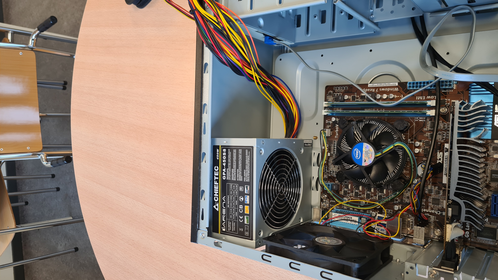

Steg-för-Steg Guide
1. Förbered Arbetsområdet
Innan du börjar, se till att du har en ren och organiserad arbetsplats. Samla alla verktyg du behöver, inklusive skruvmejslar, antistatisk armband och en mjuk yta för att lägga ut komponenterna.
2. Installera Processorn (CPU)
Öppna försiktigt CPU-sockeln på moderkortet genom att lyfta armen. Passa in processorn med markeringen på sockeln och sänk försiktigt ner den. Stäng armen för att säkra processorn på plats.
3. Installera RAM-minne
Hitta RAM-socklarna på moderkortet. Öppna clipsen på sidorna av socklarna. Passa in RAM-modulerna med spåret i sockeln och tryck ner dem tills clipsen klickar på plats.
4. Montera Moderkortet i Chassit
Placera moderkortet över standoffs i chassit och använd de medföljande skruvarna för att fästa moderkortet. Se till att alla skruvar är åtdragna, men inte för hårt.

5. Installera Strömförsörjningen (PSU)
Placera PSU:n i dess fack i chassit och skruva fast den. Anslut alla nödvändiga kablar till moderkortet, CPU, och andra komponenter som behöver ström.
6. Installera Lagringsenheter (SSD/HDD)
Montera dina lagringsenheter i deras respektive fack i chassit. Anslut dem till moderkortet med SATA-kablar och anslut strömkablar från PSU:n.
7. Installera Grafikkortet (GPU)
Sätt in grafikkortet i den översta PCIe-sockeln på moderkortet. Skruva fast kortet i chassit och anslut strömkablar från PSU:n om det behövs.
8. Kontrollera och Anslut Alla Kablar
Dubbelkolla alla anslutningar och se till att alla kablar är ordentligt anslutna. Anslut kablarna för strömbrytare, återställningsknapp och LED-indikatorer från chassit till moderkortet.
9. Stäng Chassit och Starta Upp
Sätt tillbaka sidopanelerna på chassit och skruva fast dem. Anslut datorn till ett eluttag och slå på strömmen. Om allt är korrekt installerat bör datorn starta upp och du kan fortsätta med att installera operativsystem och drivrutiner.